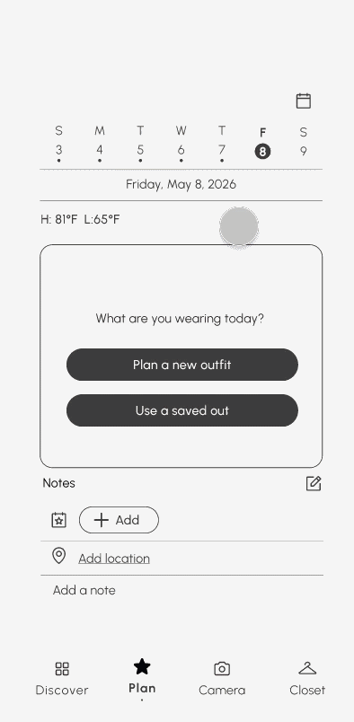
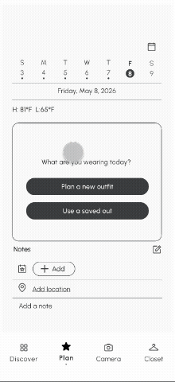

TL;DR
72% of users feel they have nothing to wear despite owning full wardrobes. I led the research that explained why, then designed two features that close that gap: a planning quiz that removes decision fatigue at the moment of getting dressed, and a calendar that gives users a reason to come back. Thread.It was recognized as Best Overall project at our cohort’s final presentations.
Overview
Context
Thread.It is a mobile app that helps users build confidence and discover their own sense of style by planning outfits from clothes they already own.
Problem
72% of users feel they have nothing to wear despite owning full wardrobes. We called it the Translation Gap: the space between the outfits people admire and what they can actually put together.
Impact
- Designed and prototyped two features end-to-end: a planning quiz that cuts decision fatigue, and a calendar that gives users a reason to come back
- Led the research (interviews plus a 74-person survey) that identified the Translation Gap and grounded both features in real user behavior
- Helped shape the team’s core design philosophy that confidence is user-defined rather than measured against a standard
Research
It’s a Structure Problem, Not a Motivation Problem
With a strict 6-week timeline, I prioritized depth over breadth: two in-depth interviews with target users, backed by a 74-person survey for scale. Rather than asking what features people wanted, I focused on their actual behavior around getting dressed.
Three findings shaped everything that followed.
Finding 1
Decision fatigue was the daily barrier.
- Users spent too long deciding what to wear each morning
- Often defaulted to the wrong outfit for the weather or occasion
- The problem was a lack of structure at the moment of decision, not a lack of inspiration
Finding 2
No outfit memory meant no learning.
- Users couldn’t recall what they’d worn to past events
- Worried about repeating looks, with no record of what actually worked
- Every outfit existed in isolation, with no way to build on past successes
Finding 3
Users struggled to articulate their own style.
- No record of what they wore or how it made them feel
- No way to develop a sense of their own style identity
- Relied entirely on external inspiration, often unattainable or irrelevant to their real life
Findings 1 and 2 each pointed to a specific feature. Finding 3 reinforced why both mattered together: users needed a structured way to act on their style, and a personal record to learn from it.
Define
Confidence Should Be the User’s to Define, Not Ours
The research made the direction clear: this wasn’t a motivation problem, it was a structure problem. We named it the Translation Gap and set out to close it from two sides, action and memory. That led to a harder question: how do you even measure confidence? We believed it’s relative, and it’s the user’s to define, not ours.
Explored
AR Try-On
× CutVirtual body model to visualize clothes. Risked making users compare themselves to a screen, or a certain beauty standard, instead of building real confidence.
Adopted
User-Defined Confidence
✓ KeptConsistency as a proxy for confidence, not a score or standard — coming back to plan and log outfits was itself a signal the product was working.
I was the one who first brought this concern to the team, and we collectively agreed it should guide the rest of the project. That decision kept the product focused on what actually mattered to users, helping them trust their own choices, instead of chasing a flashier but less meaningful feature.
Usability Testing
Small Friction Points, Big Flow Changes
Before the calendar moved into my feature, I ran a usability test on the planning quiz prototype: three participants were given the task “plan an outfit for today” and walked through the flow while thinking aloud.
Three friction points came out of testing, and each led to a specific change:
01 Confirm-Date Friction
Old
.png)
.png)
New
.png)
- 1In the old mid-fi, date confirmation was its own full screen before users could move on.
- 2The weather forecast was a separate screen too, adding another step before reaching the quiz.
- 1The date now defaults automatically, with no confirmation screen needed before the quiz starts.
- 2The weather chip pulls today’s real-time conditions automatically, so users see accurate, up-to-date weather without checking a separate app.
02 Closet Browsing
Old
.png)
New
.png)
- 1The “+” icon wasn’t recognized as the way to add an item.
- 1Replaced the abstract icon with simple tap-to-select photo tiles.
- 2Added a search bar so users can look up items by name or brand.
- 3Added filter pills (All, Tops, Bottoms, Shoes, Outerwear) so users can narrow the closet the way they expected to.
03 Occasion Clarity
Old
.png)
New
.png)
- 1Users wanted occasions beyond the four presets: in the original mid-fi, the “Skip” button sat at the bottom of the screen and didn’t let users add their own.
- 1In the new mid-fi, an “Other” category lets users type in their own occasion alongside the four presets.
- 2Moved the option to the top of the screen so it’s visible right away instead of requiring users to scroll down.
04 Outfit Selection Clarity
Old
.png)
New
.png)
- 1Users saw only one item at a time when reviewing their selection, making it hard to picture the full outfit.
- 1A full assembled outfit preview (top, bottom, shoes) shown together lets users see the whole look before confirming.
Ideate
The Calendar Found a Better Home
Early Mid-Fi
Closet Feature
After Crit
Planning Feature
Our team had 4 designers, including me, plus a project manager, and each designer owned a specific part of the product. The calendar wasn’t originally mine; it started as another designer’s feature. Early on, the team placed it inside the Closet feature, as a place to browse past outfits alongside the wardrobe itself.
At a mid-fidelity crit, it became clear the calendar fit better with planning: users needed to see outfits they’d already planned, not just worn. The calendar moved into my feature at that point, wireframes and all, and I owned reworking it to fit the planning flow rather than stand alone as a browsing log.
Solution
01 Planning Quiz
The entry point into outfit planning, and the direct fix for decision fatigue.
- Users pick a date: today, tomorrow, or a future occasion
- Then an occasion: Everyday, Night Out, Workout, Work, or Other
- Today’s weather auto-filters the wardrobe to relevant items only
- Saved looks surface outfits that already worked, so users aren’t starting from zero
- Drag-to-arrange lets users rearrange pieces in the outfit preview

02 Calendar & Outfit Log
Research showed users needed more than a planning tool — they needed memory.
- A home-screen week strip shows at a glance which days have outfits planned
- Tapping a past day opens the full outfit log: location, occasion, event, personal note
- A Week/Month toggle zooms out to see planned outfits across a full week or month
- Wear streaks surface planning consistency over time

Outcome
Recognized as Best Overall
At our cohort’s final presentations, Thread.It was recognized as Best Overall, the team’s validation that the Translation Gap framing and the research behind it actually held up in front of an audience beyond our own team.
Judged By
- Chris Ota — Staff Product Designer, LinkedIn
- Ken Skistimas — Director of UX, ServiceNow
- Aditi Jain — UI Designer, Computrition
Our final presentation was judged by three industry professionals. Their feedback centered on storytelling: they noted that anchoring the presentation in a real user’s story, rather than presenting the Translation Gap as an abstract framework, made the problem tangible and relatable. That approach, they said, made Thread.It read as a solution to a real problem, not a feature-driven product.
View project slide deck →Next Steps
What I’d Validate With More Time
A 6-week deadline meant real tradeoffs, including only two in-depth interviews instead of a larger research pool, since most of the time needed to go toward design and prototyping. With more time, I’d want to:
- Usability test both features with a larger group to validate the design against actual use, not just stated intent
- Check whether the never-worn indicator changes behavior over time, or just adds guilt without action
Reflection
Challenges and Takeaways
01 — Designing with intentionality for users
Every feature in this project needed to trace back to something a real user actually said or did, not just an idea that seemed good on its own. That discipline showed up in small decisions throughout the project, sizing and fit over numbers, streaks over ratings, weather auto-filtering over manual toggles, and pushed me to keep asking whether a choice served how users actually behaved, or just looked good in a wireframe.
02 — Advocating for a stance before there was consensus
Raising the concern about AR try-on meant pushing back on a direction the team had already started building, without data yet to prove I was right. It pushed me to get comfortable navigating ambiguity, and to make the case for a stance before the rest of the team had fully agreed on it.
03 — Understanding B2C design
This was the first project where I designed for a true consumer product, one where success isn’t measured by whether a flow works, but by whether someone wants to open the app again tomorrow. It reframed how I thought about features like wear streaks and the outfit log: not as add-ons, but as the actual mechanism for retention, since a B2C product lives or dies on habit and emotional connection, not just task completion.